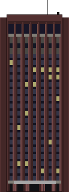

Across the commons
Search the menus
Pick a meal to find your favorites and related dishes in the saved menu.
Explore
Menu snapshot
Browse the menu data currently in this project. Check the official menu for current availability.
UMass dining, made simpler
Save the dishes you like. Check where they appear in the saved menus, along with similar suggestions.

Across the commons
Pick a meal to find your favorites and related dishes in the saved menu.
Explore
Browse the menu data currently in this project. Check the official menu for current availability.